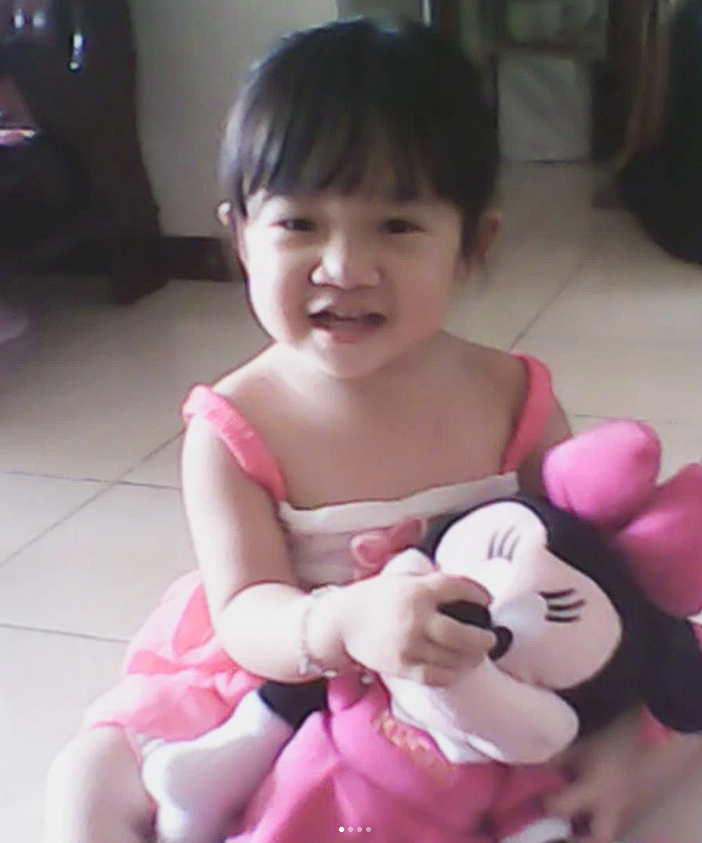
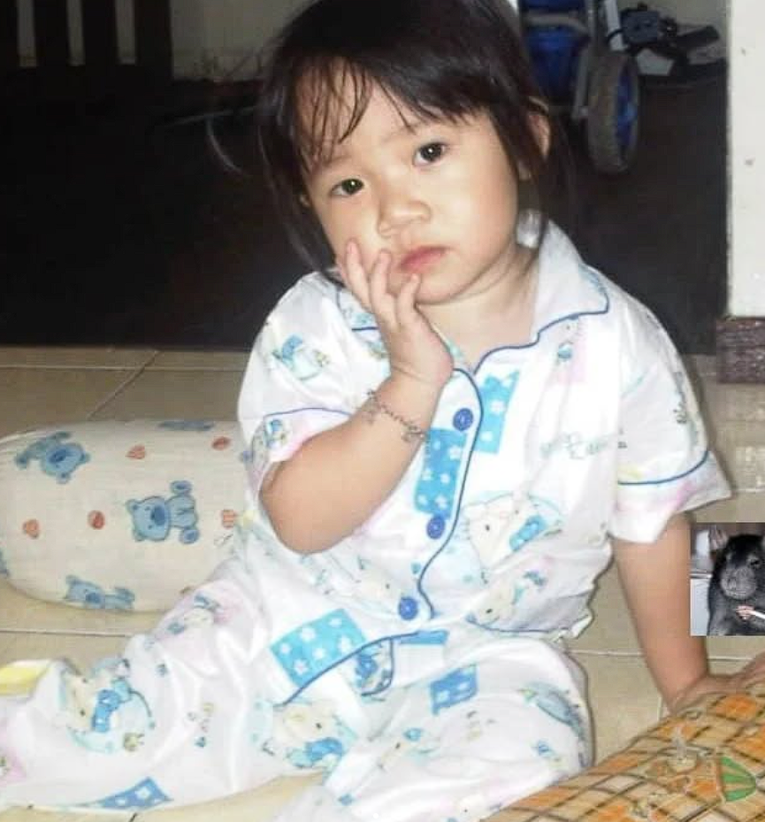

Aku ga nyangka, bisa ketemu sama orang se "perfect" itu, dan orangnya itu adalah kamu, Serena.
Setiap mabar FF, setiap candaan, jujur, itu ngebuat aku bahagia banget tau bisa ngobrol sama kamu.
you are a perpetual feeling."
Kadang aku mikir, apakah kamu risih (?), atau kamu bosen sama aku. Namun pada intinya, tinggal lebih lama, ya?
Kidung Agung 4:7
"Engkau cantik sekali, manisku, tak ada cacat cela padamu."
just by being in it."
Terima kasih sudah jadi tempat untuk bercerita. Terima kasih untuk semua hal kecil yang kamu pikir nggak berarti, padahal itu semua berarti banget.


"She don't know She's beautiful, though time and time I've told her so."
Bercanda yaa Nana, WWKWKW. Apapun yang terjadi, tolong jangan menjadi asing ya? I love you.
semoga kamu selalu ingat…
kamu dicintai.
Salam Hangat,
Kevin. ♡